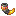
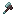

[IN] 灾厄侵扰 Illager Invasion
共 24 个条目 · illagerinvasion
版本: 21.1.6 · 来源: IllagerInvasion-v21.1.6-1.21.1-NeoForge.jar
The illagers are back! Be ready to fight new foes. A port of Illager Expansion.
MC百科中文名: [IN] 灾厄侵扰
MC百科页面: https://www.mcmod.cn/class/11340.html（[IN] 灾厄侵扰 (IllagerInvasion)）
MC百科检索: site:mcmod.cn Illager Invasion
官方介绍 （Modrinth · 中文版由 GLM AI 翻译，仅供参考）
🌑 SOULIFIED ILLAGER INVASION（魂化灾厄入侵）
Illager Invasion 模组的黑暗之魂难度附加包。包含 11 种精英灾厄村民变体，附带 2-3 级增益。
⚠️ 前置要求
以下均为必需： 1. Illager Invasion 模组 2. Soulified Vanilla 数据包或模组 3. Soulified IllagerInvasion 数据包或模组
⚔️ 功能介绍
强化了 11 种灾厄村民变体：
所有灾厄村民都经过强化，以匹配游戏后期的袭击难度。
📥 安装方法
- 将 Illager Invasion 模组安装到 mods 文件夹
- 将 Soulified Vanilla 安装到 datapacks 文件夹
- 将
soulified_illagerinvasion放入 datapacks 文件夹 - 在游戏中运行
/reload
🐛 故障排除
灾厄村民没有获得增益？ 请确认已安装 Illager Invasion 模组 还是觉得太简单？ Invoker 和 Inquisitor 是首领级敌人 能在服务器上使用吗？ 可以，安装该模组以及上述两个数据包或模组即可
直面袭击吧！💀⚔️
由 GLM AI 翻译，仅供参考
查看英文原文（Modrinth）
🌑 SOULIFIED ILLAGER INVASION
Dark Souls difficulty addon for Illager Invasion mod. 11 elite illager variants with Tier 2-3 buffs.
⚠️ REQUIREMENTS
All required: 1. Illager Invasion Mod 2. Soulified Vanilla datapack or mod 3. Soulified IllagerInvasion datapack or mod
⚔️ WHAT IT DOES
11 Illager Variants Enhanced:
All illagers enhanced for late-game raid difficulty.
📥 INSTALLATION
- Install Illager Invasion mod in mods folder
- Install Soulified Vanilla in datapacks folder
- Place
soulified_illagerinvasionin datapacks folder - Run
/reloadin-game
🐛 TROUBLESHOOTING
Illagers not buffed? Verify Illager Invasion mod is installed Still too easy? Invoker and Inquisitor are boss-tier Works on servers? Yes, install mod + both datapacks or mods
Face the raid! 💀⚔️
物品与方块
 炼金术士刷怪蛋
炼金术士刷怪蛋illagerinvasion:alchemist_spawn_egg · 物品
档案员刷怪蛋illagerinvasion:archivist_spawn_egg · 物品
猛击者刷怪蛋illagerinvasion:basher_spawn_egg · 物品
唤火者刷怪蛋illagerinvasion:firecaller_spawn_egg · 物品
 神圣宝石
神圣宝石illagerinvasion:hallowed_gem · 物品

揭示号角illagerinvasion:horn_of_sight · 物品
 虚幻之尘
虚幻之尘illagerinvasion:illusionary_dust · 物品
幻术师刷怪蛋illagerinvasion:illusioner_spawn_egg · 物品
 灌注台
灌注台illagerinvasion:imbuing_table · 方块
裁决者刷怪蛋illagerinvasion:inquisitor_spawn_egg · 物品
祈灵师刷怪蛋illagerinvasion:invoker_spawn_egg · 物品失落之烛
illagerinvasion:lost_candle · 物品?巫术之火
illagerinvasion:magic_fire · 方块巫术火焰弹
illagerinvasion:magical_fire_charge · 物品
掳掠者刷怪蛋illagerinvasion:marauder_spawn_egg · 物品
死灵法师刷怪蛋illagerinvasion:necromancer_spawn_egg · 物品
 铂金碎块
铂金碎块illagerinvasion:platinum_chunk · 物品

铂金短柄斧illagerinvasion:platinum_infused_hatchet · 物品
 铂金板材
铂金板材illagerinvasion:platinum_sheet · 物品
 始源精华
始源精华illagerinvasion:primal_essence · 物品
挑衅者刷怪蛋illagerinvasion:provoker_spawn_egg · 物品
不祥术士刷怪蛋illagerinvasion:sorcerer_spawn_egg · 物品
亡骨役奴刷怪蛋illagerinvasion:surrendered_spawn_egg · 物品
 奇异之尘
奇异之尘illagerinvasion:unusual_dust · 物品